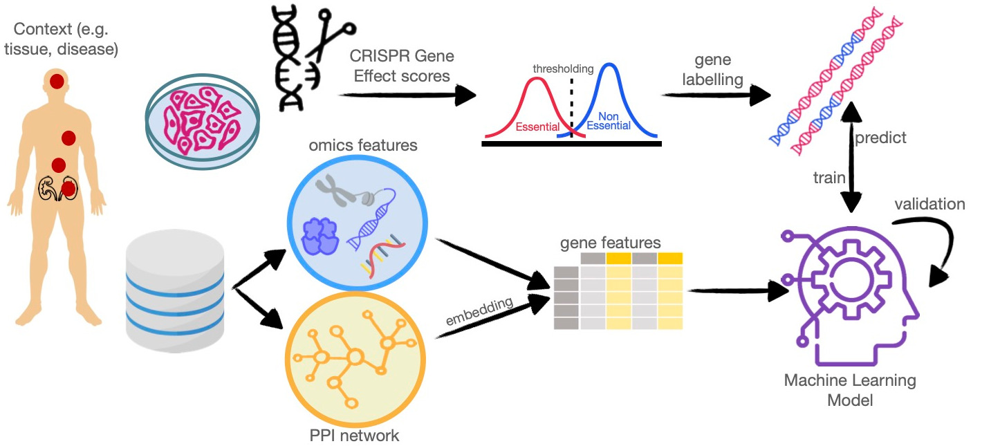

Welcome to HELPpy documentation!
Essential genes are commonly defined as those required for the growth and survival of any organism or cell. HELP stands for “Human Gene Essentiality Labelling & Prediction”, a computational framework for labelling and predicting essential genes, and HELPpy is a Python implementation of theHELP framework. Its double scope allows achieving the identification of genes through the dependency or not from experimental data. HELPpy is a library of tools useful for the identification of domain-specific context genes that can highlight multiple levels of essentiality, and thus significance in the functional role of genes.
This is the Big Picture to understand the HELPpy approach.
NOTES:
PACKAGE REFERENCE:
EXAMPLES:
- Example 1: Identification of context-specific EGs
- Example 2: Identification of common context-specific EGs
- Example 3: Prediction of tissue-specific EGs